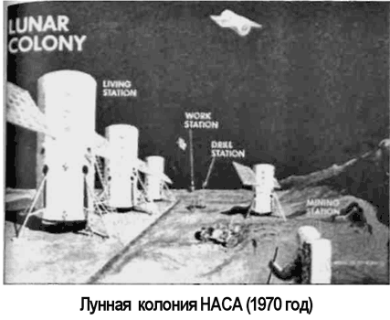

Лунная колония программы «Apollo»
Теперь уже мало кто вспоминает, что американская космическая программа «Аполлон» закончилась совсем не так, как должна была закончиться. В период с 1970 по 1972 год планировалось провести восемь пилотируемых экспедиций на Луну, однако в реальности состоялось только пять («Аполлон-13, -14, -15, -16, -17»). В период с 1978 по 1980 год планировалось построить обитаемую станцию на окололунной орбите, а с 1980 по 1983 год — развернуть постоянную базу на поверхности Луны, однако эти два проекта остаются мечтой фантастов.
У скороспелого завершения программы «Аполлон» есть несколько причин. Среди них обычно называют значительное урезание бюджета, вызванное колоссальными расходами на войну во Вьетнаме, а также снижение интереса американской общественности к теме космических исследований после того, как победа в лунной «гонке» была достигнута. На самом же деле есть еще одна (и, на мой взгляд, основная) причина, по которой программа «Аполлон» не могла быть доведена до «логического» конца. Дело в том, что она (как, впрочем, и советская лунная программа) была преждевременной.
У человечества еще не возникло потребности в планомерном освоении ресурсов Луны, а значит, любые расходы на подобное предприятие в тот период не могли принести какой-либо отдачи, кроме морального удовлетворения.
А удовлетворение было получено уже на этапе полета «Аполлона-8» вокруг Луны. Большего, в сущности, и не требовалось, поэтому к тому моменту, когда Армстронг ступил на лунный грунт, участь программы «Аполлон» была предрешена…
Ныне проект лунной базы, который разрабатывался в рамках программы «Аполлон», совершенно забыт. Но забытые проекты — главная тема настоящей книги, поэтому снова вернемся на сорок лет назад, к программе «Аполлон».
Детальное планирование лунной базы началось в НАСА в 1961 году. В разработке принимали участие авиакомпании «Боинг», «Норт Америкен», «Рокуэлл» и «Грумман». В разное время этот проект назывался по-разному: «Аполлон-Икс» («Apollo-X»), «Аполлон-ЕС» («Apollo Extension Systems», «AES»), «Аполлон-АП» («Apollo Applications Program», «AAP»). В 60-е годы не существовало лунного корабля многоразового использования, но конструкторы НАСА рассчитывали на то, что по мере развития программы такое средство появится.
И действительно, в скором времени появился проект «Лунного такси» («Apollo LM Taxi») фирмы «Грумман», которое представляло собой модифицированный вариант лунного модуля корабля «Аполлон», приспособленный для длительного (до 14 дней) пребывания экипажа из двух астронавтов на лунной поверхности. При этом габариты «Лунного такси» были выбраны следующие: полная длина — 6,4 метра, максимальный диаметр — 4,3 метра, обитаемое пространство — 6,65 м3, полная масса — 14 700 килограммов, масса топлива — 10 500 килограммов.
Понятно, что при таких габаритах «Лунное такси» не способно обеспечить полноценную двухнедельную работу на лунной поверхности, поэтому в дополнение к нему конструкторы «Грумман» спроектировали «Лунное убежище» («Apollo LM Shelter»), которое должно было прилуняться самостоятельно, в автоматическом режиме, по сути являясь прототипом жилого блока временной лунной базы.

При использовании этих двух аппаратов экспедиция на Луну выглядела бы так. Сначала на Луну отправляется модуль «Лунное убежище». Если в течение трех месяцев его агрегаты функционируют нормально, к Луне отправляется космический корабль, состоящий из типового командного модуля «Аполлон» («Apollo CSM») и «Лунного такси». Первый остается на окололунной орбите, второй совершает прилунение. После того как «такси» опустится на поверхность Луны, астронавты покинут его, перейдя в «убежище». Там они проведут полные две недели экспедиции. Габариты «Лунного убежища» в точности такие же, как и у «такси», но запасов топлива гораздо меньше, что позволяет разместить на модуле гораздо больший запас воздуха и продуктов, а также дополнительный комплект научного оборудования.
Дальнейшее увеличение продолжительности лунной экспедиции могло быть достигнуто за счет доработки приборно-агрегатного отсека корабля «Аполлон», который превращался в посадочный модуль. На основе этой доработки возник проект лунной станции «ЛАСС» («LASS», «LM Adapter Surface Station»), с помощью которой можно было бы доставить на Луну 7,7 тонны полезного груза, обеспечив тем самым работу экипажа из двух человек в течение 96 дней.
Помимо основного оборудования, груз включал лунный автомобиль («Lunar Roving Vehicle», «LRV») и лунный перемещаемый модуль («Lunar Flying Unit», «LFU»). Поскольку не было возможности обеспечить нормальную жизнедеятельность астронавта, оставляемого на орбите, в течении 100 дней, то был предложен вариант, при котором он возвращался на Землю, а за двумя астронавтами, работающими на Луне, снаряжалась отдельная экспедиция.
Рассматривался и более экономичный вариант, при котором отпадала необходимость в дополнительном (и весьма дорогостоящем) запуске. При этом варианте космический корабль дорабатывался таким образом, чтобы он мог разделиться на два крупных модуля: блок орбитальной станции («Lunar Orbit Base», «LOB») и блок лунной базы («Lunar Surface Base», «LSB»). При такой конфигурации к Луне можно было доставить экипаж из четырех человек, двое из которых оставались на орбите, а двое спускались на поверхность. При этом эксплуатационный ресурс блока лунный базы составлял 100 дней, а модуля «Лунное такси», на котором астронавты спустятся на поверхность, — 60 дней.
В более поздний период рассматривался еще более радикальный проект «Аполлон-ЛЕСА» («LESA Shelter», «Lunаг Exploration System for Apollo»), предусматривающий создание принципиально нового космического корабля, предназначенного для посадки на Луну. При этом в комплекс «ЛЕСА» входил блок «убежища» и вездеход «Молаб» («Molab» — сокращение от «Mobile Lunar Laboratory»). Весь комплекс доставлялся на поверхность Луны в беспилотном режиме. В первоначальном проекте «ЛЕСА-убежище» комплектовалось на экспедицию из трех человек, которая проведет на Луне 90 дней, позднее — на экспедицию из шести человек.
Габариты «Аполлон-ЛЕСА»: полная длина — 4,3 метра, максимальный диаметр — 6,7 метра, обитаемый объем — 80 м3, полная масса — 9700 килограммов.
В разработанных проектах лунной базы «Аполлон» в качестве средства транспортного обеспечения предлагалось использовать ракету «Сатурн-5».
Непосредственно перед началом реализации программы «Аполлон» в 1967 году появился проект, рассматривающий создание четырех долговременных баз на лунной поверхности: двух станций в кратере Гримальди, одной в центре обратной стороны Луны и одной на южном полюсе. Функционирование всех баз предполагалось осуществлять последовательно.
Например, база в кратере Гримальди должна была работать в течение двух лет. В программу исследований входили астрономические наблюдения, эксперименты по биологии, в области прикладных наук. Затем в качестве второй очереди могла бы вступить в строй следующая лунная станция и так далее. Вся программа четырех лунных баз потребовала бы проведения 63 запусков ракет-носителей «Сатурн5» в период с 1971 по 1988 год.
Вскоре после осуществления первых полетов на Луну в 1971 году был предложен еще один проект организации постоянно действующей лунной базы, который содержал ряд новых элементов. Во-первых, в разработках уже использовались первые результаты лунных экспедиций. Во-вторых, впервые была предложена концепция такой организации лунной базы, в которой основная транспортная нагрузка ложилась не на систему ракеты-носителя «Сатурн-5», а на корабль многоразового использования («Спейс Шаттл»), с помощью которого все необходимые грузы должны были доставляться на низкую околоземную орбиту с последующим перемещением к Луне особой транспортной системой. Эта программа стала последней крупной разработкой того периода, но оказалась невостребованной.